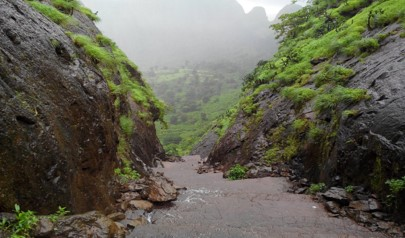

Anjaneri, one of the forts in the mountain range of Nasik-Trimbakeshwar, is considered to be the birthplace of god Hanuman. Anjaneri is located 20 km away from Nasik by Trimbak Road. It has become a famous trekking spot for local Nashikites, specially in the rainy season. Anjaneri is an attraction of Nasik city, which is also an important fort in the Trimbakeshwar region. Situated at 4,264 feet (1,300 m) above sea level, it lies between Nasik and Trimbakeshwar. Anjaneri is the birthplace of Lord Hanuman, and is named after Hanuman's mother, Anjani.
Timings : no restriction
